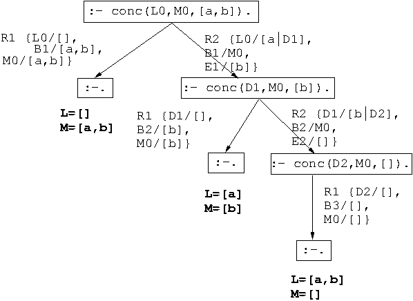
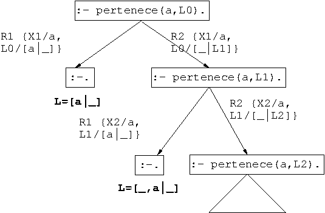
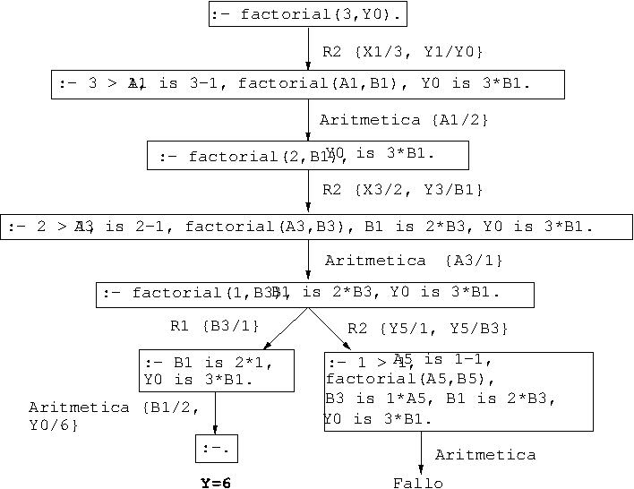

Tema 2: Listas, operadores y aritmética
Índice
- 1. Representación de listas
- 2. Pertenencia
- 3. Disyunciones
- 4. Operadores
- 5. Aritmética
- 6. Ejercicios
- 6.1. Relación de pertenencia
- 6.2. Relación de sublista
- 6.3. Último elemento de una lista
- 6.4. Inversa de una lista
- 6.5. Palíndromos
- 6.6. Selección de un elemento
- 6.7. Máximo de dos números
- 6.8. Algoritmo de Euclides para el máximo común divisor
- 6.9. Longitud de una lista
- 6.10. Máximo de una lista
- 6.11. Intervalo numérico
- 6.12. Base de conocimiento con los operadores definidos
esyde - 6.13. Base de conocimiento con el operador definidos
a
- 7. Bibliografía
1. Representación de listas
1.1. Definición de listas
- Definición de listas:
- La lista vacía
[]es una lista. - Si
Les una lista, entonces.(a,L)es una lista.
- La lista vacía
Ejemplos:
?- .(a,.(b,[])) = [a,b]. true. ?- .(X,Y) = [a]. X = a Y = [] ?- .(X,Y) = [a,b]. X = a Y = [b] ?- .(X,.(Y,Z)) = [a,b]. X = a Y = b Z = []
1.2. Escritura abreviada
Escritura abreviada:
[X|Y] = .(X,Y)
Ejemplos con escritura abreviada:
?- [X|Y] = [a,b]. X = a Y = [b] ?- [X|Y] = [a,b,c,d]. X = a Y = [b, c, d] ?- [X,Y|Z] = [a,b,c,d]. X = a Y = b Z = [c, d]
1.3. Concatenación de listas
Especificación:
conc(A,B,C)se verifica siCes la lista obtenida escribiendo los elementos de la listaBa continuación de los elementos de la listaA; es decir,- Si
Aes la lista vacía, entonces la concatenación deAyBesB. - Si
Aes una lista cuyo primer elemento esXy cuyo resto esD, entonces la concatenación deAyBes una lista cuyo primer elemento esXy cuyo resto es la concatenación deDyB.
Por ejemplo,
?- conc([a,b],[b,d],C). C =[a,b,b,d]
- Si
Definición 1: conc_1.pl
conc(A,B,C) :- A=[], C=B. conc(A,B,C) :- A=[X|D], conc(D,B,E), C=[X|E].
Definición 2: conc_2.pl
conc([],B,B). conc([X|D],B,[X|E]) :- conc(D,B,E).
- Nota: La definición de
conces análoga a la desuma. Consulta: ¿Cuál es el resultado de concatenar las listas
[a,b]y[c,d,e]??- conc([a,b],[c,d,e],L). L = [a, b, c, d, e]
Consulta: ¿Qué lista hay que añadirle a la lista
[a,b]para obtener[a,b,c,d]??- conc([a,b],L,[a,b,c,d]). L = [c, d]
Consulta: ¿Qué dos listas hay que concatenar para obtener
[a,b]??- conc(L1,L2,[a,b]). L1 = [], L2 = [a, b] ; L1 = [a], L2 = [b] ; L1 = [a, b], L2 = [] ; false.
- La concatenación está predefinida mediante
append. - Árbol de deducción correspondiente a
?- conc(L,M,[a,b]).

2. Pertenencia
- Especificación:
pertenece(X,L)se verifica siXes un elemento de la listaL. Definiciones: pertenece.pl
pertenece(X,[X|L]). pertenece(X,[Y|L]) :- pertenece(X,L).
Definición 2: pertenece.pl
pertenece(X,[X|_]). pertenece(X,[_|L]) :- pertenece(X,L).
Consultas:
?- pertenece(b,[a,b,c]). true ; false. ?- pertenece(d,[a,b,c]). false. ?- pertenece(X,[a,b,a]). X = a ; X = b ; X = a ; false. ?- pertenece(a,L). L = [a|_344] ; L = [_1002, a|_1010] ; L = [_1002, _1668, a|_1676] ; L = [_1002, _1668, _2334, a|_2342]
- Árbol de deducción de
?- pertenece(a,L).
 - La relación de pertenencia está predefinida con
member.
3. Disyunciones
Definición de
pertenececon disyunción (pertenece.pl)pertenece(X,[Y|L]) :- X=Y ; pertenece(X,L).
Definición equivalente sin disyunción
pertenece(X,[Y|L]) :- X=Y. pertenece(X,[Y|L]) :- pertenece(X,L).
4. Operadores
4.1. Ejemplos de operadores aritméticos
Ejemplos de notación infija y prefija en expresiones aritméticas:
?- +(X,Y) = a+b. X = a Y = b ?- +(X,Y) = a+b+c. X = a+b Y = c ?- +(X,Y) = a+(b+c). X = a Y = b+c ?- a+b+c = (a+b)+c. true. ?- a+b+c = a+(b+c). false.
Operadores aritméticos predefinidos:
Precedencia Tipo Operadores 500 yfx+,=-=Infijo asocia por la izquierda 500 = fx= -Prefijo no asocia 400 yfx*,/Infijo asocia por la izquierda 200 xfy^Infijo asocia por la derecha Ejemplos de asociatividad:
?- X^Y = a^b^c. X = a Y = b^c ?- a^b^c = (a^b)^c. false. ?- a^b^c = a^(b^c). true.
Ejemplo de precedencia
?- X+Y = a+b*c. X = a Y = b*c ?- X*Y = a+b*c. false. ?- X*Y = (a+b)*c. X = a+b Y = c ?- a+b*c = a+(b*c). true. ?- a+b*c = (a+b)*c. false.
4.2. Definición de operadores
Ejemplo de definición de operadores (ejemplo_operadores.pl)
:-op(800,xfx,estudian). :-op(400,xfx,y). juan y ana estudian lógica.
Consultas
?- Quienes estudian lógica. Quienes = juan y ana. ?- juan y Otro estudian Algo. Otro = ana, Algo = lógica.
5. Aritmética
5.1. Evaluación de expresiones aritméticas
Evaluación de expresiones aritmética con
is.?- X is 2+3^3. X = 29 ?- X is 2+3, Y is 2*X. X = 5 Y = 10
Relaciones aritméticas:
<,=<,>,>=,=:=y=/=?- 3 =< 5. true. ?- 3 > X. % ERROR: Arguments are not sufficiently instantiated ?- 2+5 = 10-3. false. ?- 2+5 =:= 10-3. true.
5.2. Definición de relaciones aritméticas
factorial(X,Y)se verifica siYes el factorial deX. Por ejemplo,?- factorial(3,Y). Y = 6 ; false.
Definición (factorial.pl)
factorial(1,1). factorial(X,Y) :- X > 1, A is X - 1, factorial(A,B), Y is X * B.
- Árbol de deducción de
?- factorial(3,Y).

6. Ejercicios
6.1. Relación de pertenencia
Ejercicio 1. Definir la relación pertenece(X,L) que se verifica si
X es un elemento de la lista L. Por ejemplo,
?- pertenece(b,[a,b]). true ?- pertenece(c,[a,b]). false. ?- pertenece(X,[a,b]). X = a ; X = b ; false.
Nota: La relación predefinida correspondiente a pertenece es member.
1ª solución
pertenece(X,[X|_]). pertenece(X,[_|L]) :- pertenece(X,L).
2ª solución
pertenece_2(X,[Y|L]) :- X = Y ; pertenece_2(X,L).
3ª solución
pertenece_3(X,L) :- append(_,[X|_],L).
6.2. Relación de sublista
Ejercicio 2. Definir la relación sublista(L1,L2) que se verifica si
L1 es una sublista de L2. Por ejemplo,
?- sublista([b,c],[a,b,c,d]). true ?- sublista([b,d],[a,b,c,d]). false.
Solución
sublista(L1,L2) :- append(_,L4,L2), append(L1,_,L4).
6.3. Último elemento de una lista
Ejercicio 3. Definir la relación último(L,X) que se verifica si el
último elemento de la lista L es X. Por ejemplo,
?- último([a,b,c],X). X = c ?- último(L,c). L = [c] ; L = [_1000, c]
Nota: La relación predefinida correspondiente a último es last.
1ª solución
último([X],X). último([_|L],X) :- último(L,X).
2ª solución
último_2([X|Xs],U) :- último_2'(Xs,X,U). último_2'([], U, U). último_2'([X|Xs], _, U) :- último_2'(Xs, X, U).
3ª solución
último_3(L,X) :- append(_,[X],L).
6.4. Inversa de una lista
Ejercicio 4. Definir la relación inversa(L1,L2) que se verifica si
L2~es la lista ~L1 en orden inverso. Por ejemplo,
?- inversa([a,b,c],L). L = [c, b, a]. ?- inversa([a,[b,c],d,e],L). L = [e, d, [b, c], a].
Nota: La relación predefinida correspondiente a inversa es reverse.
Solución
inversa([],[]). inversa([X|L1],L2) :- inversa(L1,L3), append(L3,[X],L2).
6.5. Palíndromos
Ejercicio 5. Definir la relación palíndromo(L) que se verifica si
L es un palíndromo; es decir, da igual leerlo de izquierda a derecha que
leerlo de derecha a izquierda. Por ejemplo,
?- palíndromo([r,o,m,a,y,a,m,o,r]). true.
Solución
palíndromo(L) :- inversa(L,L).
6.6. Selección de un elemento
Ejercicio 6. Definir la relación selecciona(X,L1,L2) que se verifica
si X es un elemento de la lista L1 y L2 es la lista de los restantes
elementos. Por ejemplo,
?- selecciona(X,[a,b,c],L). X = a, L = [b, c] ; X = b, L = [a, c] ; X = c, L = [a, b] ; false. ?- selecciona(a,L1,[b,c]). L1 = [a, b, c] ; L1 = [b, a, c] ; L1 = [b, c, a] ; false. ?- selecciona(a,L1,[b,c]). L1 = [a, b, c] ; L1 = [b, a, c] ; L1 = [b, c, a] ; false. ?- selecciona(a,L1,L2). L1 = [a|L2] ; L1 = [_8510, a|_8518], L2 = [_8510|_8518]
Nota: La relación predefinida correspondiente a selecciona es
select.
Solución
selecciona(X,[X|L],L). selecciona(X,[Y|L1],[Y|L2]) :- selecciona(X,L1,L2).
6.7. Máximo de dos números
Ejercicio 7. Definir la relación máximo(X,Y,Z) que se verifica si
Z es el máximo de los números X e ~Y. Por ejemplo,
?- máximo(3,5,Z). Z = 5. ?- máximo(2,3,X). X = 3. ?- máximo(3,2,X). X = 3 ; false.
1ª solución
máximo(X,Y,X) :- X >= Y. máximo(X,Y,Y) :- X < Y.
2ª solución
máximo_2(X,Y,Z) :- Z is max(X,Y).
Nota: El comportamiento es diferente si no están instanciados los dos primeros argumentos. Por ejemplo,
?- máximo(3,5,Z). Z = 5. ?- máximo(3,Y,5). Y = 5. ?- máximo_2(3,5,Z). Z = 5. ?- máximo_2(3,Y,5). ERROR: Arguments are not sufficiently instantiated
6.8. Algoritmo de Euclides para el máximo común divisor
Ejercicio 8 (Algoritmo de Euclides). Dados dos enteros positivos X e
Y, el máximo común divisor (mcd) D puede obtenerse de la siguiente
manera:
- Si
XeYson iguales, entoncesDes igual aX. - Si
X < Y, entoncesDes igual al máximo común divisor deXy la diferenciaY-X. - Si
Y < XentoncesDes igual al máximo común divisor deXy la diferenciaX-Y.
Definir ee predicado mcd(X,Y,D) que se verifica si D es el máximo
común divisor de los enteros positivos X e Y. Por ejemplo.
?- mcd(5,5,X). X = 5 ?- mcd(6,10,X). X = 2 ?- mcd(10,6,X). X = 2
1ª solución
mcd(X,X,X). mcd(X,Y,Z) :- X < Y, Y1 is Y - X, mcd(X,Y1,Z). mcd(X,Y,Z) :- X > Y, mcd(Y,X,Z).
2ª solución
mcd_2(X,Y,Z) :- Z is gcd(X, Y).
6.9. Longitud de una lista
Ejercicio 9. Definir la relación longitud(L,N) que se verifica si N
es la longitud de la lista L. Por ejemplo,
?- longitud([],N). N = 0. ?- longitud([a,b,c],N). N = 3. ?- longitud([a,[b,c]],N). N = 2.
Nota: La relación predefinida correspondiente a longitud es length.
Solución
longitud([],0). longitud([_X|L],N) :- longitud(L,M), N is M + 1.
6.10. Máximo de una lista
Ejercicio 10. Definir la relación máximo_lista(L,N) que se verifica
si N es el máximo de los elementos de la lista de números L. Por
ejemplo,
?- máximo_lista([1,3,9,5],N). N = 9
Nota: La relación predefinida correspondiente a máximo_lista es
max_list.
1ª solución
máximo_lista([X],X). máximo_lista([X,Y|L],N) :- máximo(X,Y,Z), máximo_lista([Z|L],N).
2ª solución
máximo_lista_2([X],X). máximo_lista_2([X,Y|L],N) :- Z is max(X,Y), máximo_lista_2([Z|L],N).
6.11. Intervalo numérico
Ejercicio 11. Definir la relación entre(N1,N2,X) que se verifica si
X es mayor o igual que N1 y menor o igual que N2. Por ejemplo,
?- entre(2,5,X). X = 2 ; X = 3 ; X = 4 ; X = 5 ; false. ?- entre(2,1,X). false.
Nota: La relación predefinida correspondiente a entre es between.
Solución
entre(N1,N2,N1) :- N1 =< N2. entre(N1,N2,X) :- N1 < N2, N3 is N1 + 1, entre(N3,N2,X).
6.12. Base de conocimiento con los operadores definidos es y de
Ejercicio 12. Se considera la siguiente base de conocimiento
:- op(800,xfx,es). :- op(400,yfx,de). el_libro de ciencias de juan es rojo.
¿Qué responde Prolog a las siguientes preguntas?
?- X es rojo.?- X de Y es rojo.?- el_libro de X es rojo.
Solución
?- X es rojo. X = el_libro de ciencias de juan true. ?- X de Y es rojo. X = el_libro de ciencias Y = juan true. ?- el_libro de X es rojo. false.
6.13. Base de conocimiento con el operador definidos a
Ejercicio 13. Se considera la siguiente base de conocimiento
:- op(500,yfx,a). b a c a l a o.
- ¿Qué responde Prolog a las siguientes preguntas?
?- M a l a S.?- b a c a S.
- ¿Y si cambiamos la directiva por
:- op(500,xfy,a).?
Solución del apartado 1
La directiva
:- op(500,yfx,a)
indica que a es un operador infijo que asocia por la izquierda. Por tanto, el
término correspondiente al hecho
b a c a l a o
es
a(a(a(b,c),l),o).
El término correspondiente a
M a l a S
es
a(a(M,l),S)
y la respuesta de Prolog es
?- M a l a S. M = b a c S = o
El término correspondiente a
a b a c a S
es
a(a(b,c),S)
y la respuesta de Prolog es
?- b a c a S. false.
Solución del apartado 2
La directiva
:- op(500,xfy,a)
indica que a es un operador infijo que asocia por la derecha. Por
tanto, el término correspondiente al hecho
b a c a l a o
es
a(b,a(c,a(l,o))).
El término correspondiente a
M a l a S
es
a(M,a(l,S))
y la respuesta de Prolog es
?- M a l a S. false.
El término correspondiente a
a b a c a S
es
a(b,a(c,S))
y la respuesta de Prolog es
?- b a c a S. S = l a o
7. Bibliografía
- Alonso, J.A. Introducción a la programación lógica con Prolog.
- Bratko, I. Prolog Programming for Artificial Intelligence (2nd ed.) (Addison–Wesley, 1990)
- Clocksin, W.F. y Mellish, C.S. Programming in Prolog (Fourth Edition) (Springer Verlag, 1994)
- Covington, M.A.; Nute, D. y Vellino, A. Prolog Programming in Depth (Prentice Hall, 1997)
- Sterling, L. y Shapiro, E. L'art de Prolog (Masson, 1990)
- Van Le, T. Techniques of Prolog Programming (John Wiley, 1993)